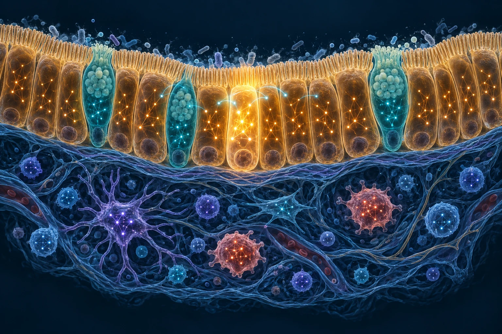
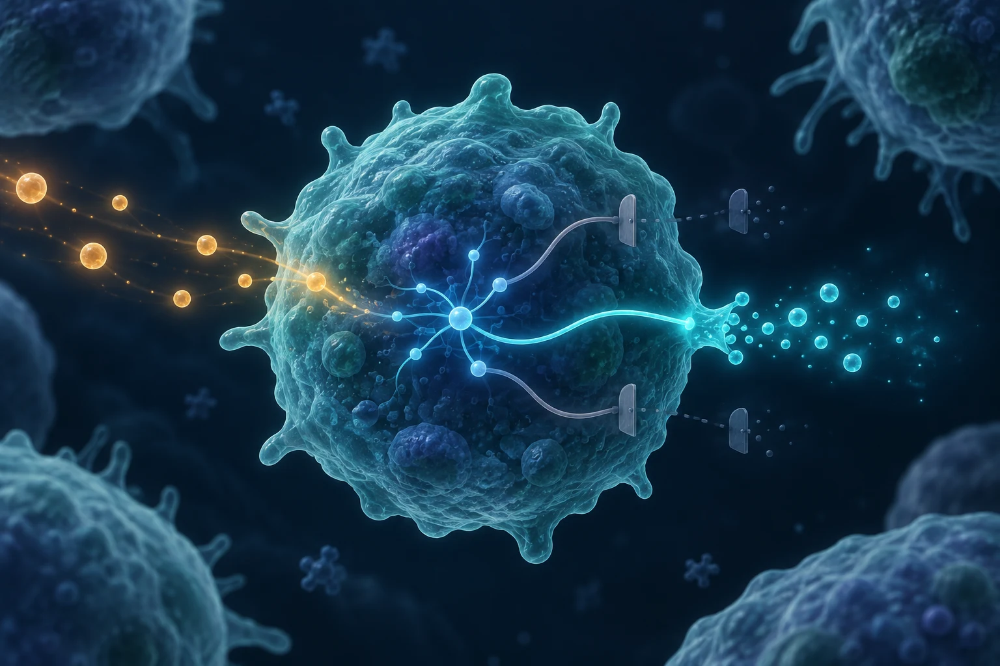
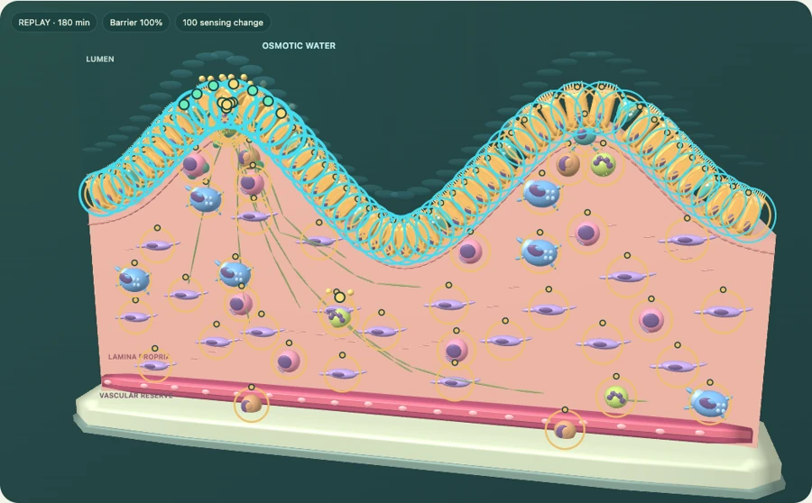
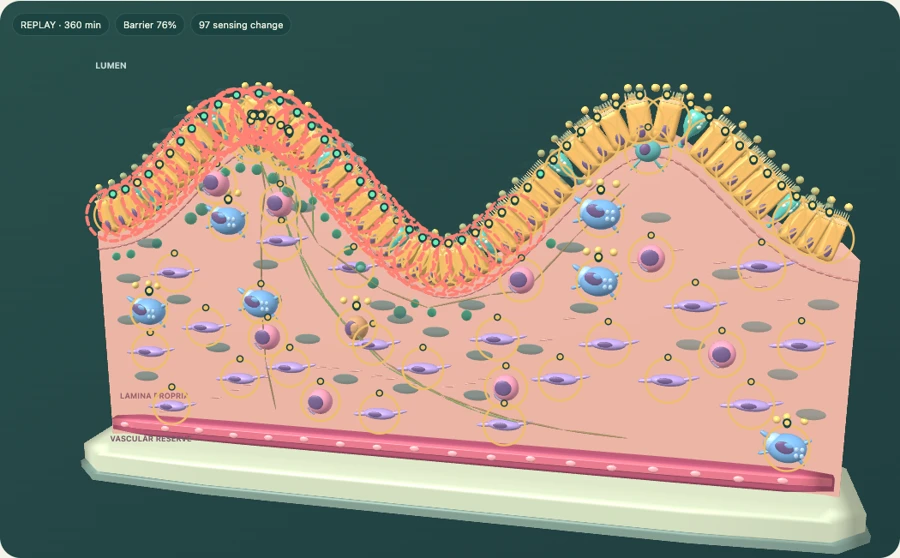
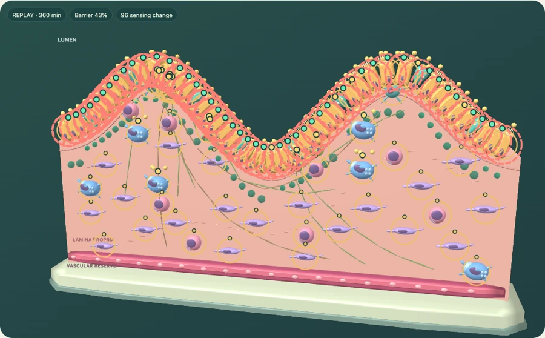
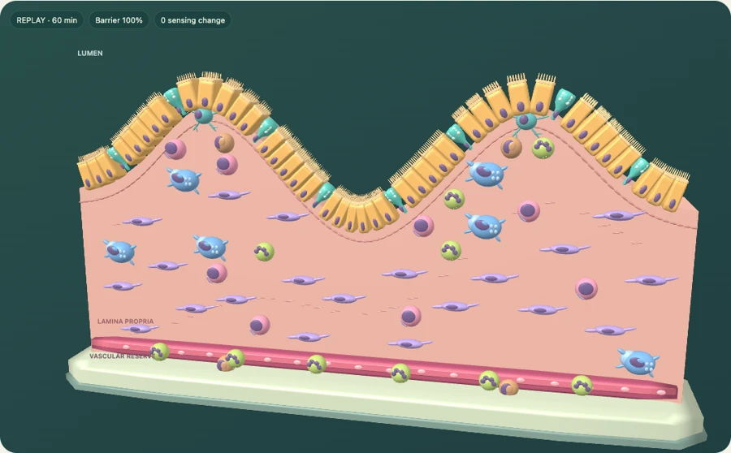

Sense locally
Nearby signals, physical contacts and the cell’s own condition define its view.
A computational tissue experiment
What if every cell were an AI agent, sensing its surroundings and acting within the rules of biology?
Meet VirtualTissue. A virtual gut where local signals and constrained cellular choices shape the tissue together.
Recorded demonstrations · No sign-in · No live AI calls

01 / The idea
Intelligence at the scale of a cell
No cell sees the whole tissue. Each reads its local environment, carries its own state, and responds from a limited set of possible actions.
The live research model asks Jev / TypeSafe AI a separate, structured question for each eligible cell. An executable biological manual defines what that cell is allowed to do.
Follow a cellular decision
Nearby signals, physical contacts and the cell’s own condition define its view.
Cell identity, resources and the manual determine the available actions. Waiting is always an option.
Actions take biological time. Their physical effects can change what neighboring cells sense next.
02 / Inside a decision
An illustrated walkthroughFollow the path from a local signal to a recorded effect. The manual, the choice and the physical outcome each have a distinct role.
01 / LOCAL OBSERVATION
A cell reads nearby signals, contacts and its own state. A local departure can make it eligible for a decision; quiet cells are not queried.
Local sensing only. No tissue-wide view is passed to a cell.
03 / Explore the recordings
Real saved runs. Replay in your browser.Play, pause and scrub through each experiment. Select a cell to inspect its saved observations, choices and completed effects.
About these demonstrations These recordings use a deterministic fixture policy, not live AI responses. They demonstrate the simulation and its audit trail. Playback makes no AI or API calls.

Recorded experimentEnterotoxin exposure
Follow toxin exposure and the local ion and water secretion response.
Watch experiment Download recording · 1.4 MB
Recorded experimentContact-driven injury
Explore bacterial attachment, brush-border damage and local responses.
Watch experiment Download recording · 5.3 MB
Recorded experimentFocal innate inflammation
Trace a focal barrier lesion and the surrounding innate inflammatory response.
Watch experiment Download recording · 5.7 MB
Recorded experimentThe quiet control
An undisturbed tissue: no external input and no cellular questions.
Watch experiment Download recording · 0.3 MBSame starting seed. Independent runs. Every decision is saved, even between visual frames. Open your own recording
04 / Built to be inspected
Follow the reasoning all the way down to the rules, recorded state and executed effects.
Explore the sourceA 100-cell gut microdomain with eight cell identities, local sensing, constrained individual choices, finite resources and explicit event clocks. A 2D physical slice is presented as a 3D cutaway.
Each cell is modeled as an individual agent with its own state and local observations. In live experiments, Jev chooses among legal actions for eligible cells. Cells do not each train a separate model, and quiet cells do not make requests. This website only replays recorded fixture demonstrations.
This is an uncalibrated mechanistic demonstration, not a validated biological predictor. Choice probabilities are not biological event rates. IBD-like injury represents a limited innate inflammatory challenge, not a complete disease model.
Manual v3 documents the mechanisms, assumptions and primary references. It defines 56 action contracts; 22 physical handlers are implemented. Unsupported actions stay blocked.
Read the complete manual ↗The people behind the project
Conceived and created by Helder Nakaya, leader of CSBL and founder of Hylix.app. Developed with ChatGPT and Claude as AI collaborators.
Project credits ↗